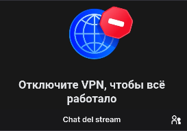

Android · Chrome
- Abre el menú de Chrome tocando los tres puntos de la esquina superior derecha.
- Desplázate por el menú y busca Sitio para computadoras.
- Activa esa opción. Chrome actualizará esta página y VK debería cargar.
iPhone · Safari
- Pulsa el icono AA a la izquierda de la barra de direcciones.
- Selecciona Sitio web en versión de escritorio.
- La página se recargará y VK debería cargar.
Se ampliarán más soluciones con el tiempo.
En móvil
- Gira el teléfono a horizontal y pulsa Mostrar chat.
- El navegador intentará abrir la página en pantalla completa y ocultar su barra. Al volver a vertical, el video y el chat deberían seguir ocupando la pantalla.
- Para salir de pantalla completa, vuelve a horizontal y pulsa Solo video.
La disponibilidad depende del navegador y del dispositivo; una página web no puede forzar este modo en todos los móviles.